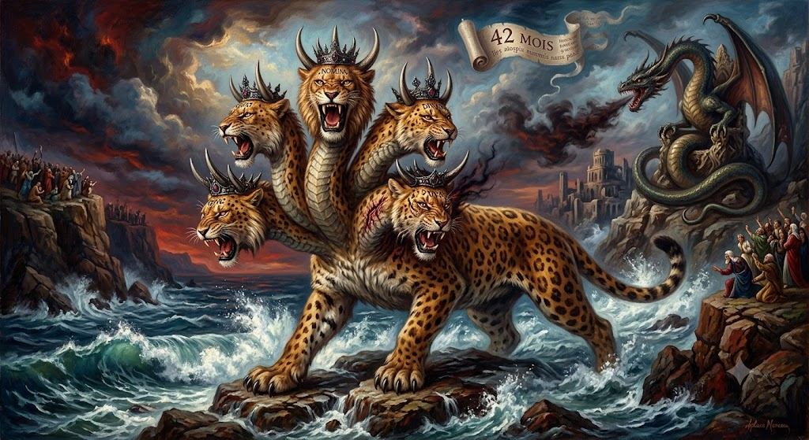

Le troisième sceau : l'aveu de la Bête aux sept têtes
Comment l'Apocalypse de Pierre (112 CE) répond à l'Apocalypse de Jean de Patmos (95 CE)
Le troisième sceau prolonge le dossier consacré à Pline le Jeune et à l'Évangile de Pierre en y intégrant l'Apocalypse de Pierre. La thèse : ce texte constitue le premier geste pétrinien de 112 CE, une réponse à l'Apocalypse de Jean de Patmos (95 CE) qui avoue, sans encore le masquer, que l'accomplissement de l'Agneau pascal — la crucifixion du Roi des Juifs au 14 Nissan 107 — est déjà ouvert.
Cette page sert de porte d'entrée vers un dossier philologique sur l'Apocalypse de Jean, l'Apocalypse de Pierre, le réseau nazoréen et la fabrication d'un récit antidaté destiné à dissimuler Rome derrière la Bête aux sept têtes de la prophétie.
Résumé
Ce complément prolonge le dossier consacré à Pline le Jeune et à l'Évangile de Pierre. Le document principal établissait l'hypothèse d'un falsum romain de matrice plinienne, rédigé en grec vers 112 CE dans la séquence de Bithynie, antidatant à 33 CE la crucifixion du roi des Juifs située dans la présente reconstruction au 14 Nissan 107 CE. Le présent complément ajoute une pièce : l'Apocalypse de Pierre.
L'hypothèse proposée est que l'Apocalypse de Pierre constitue le premier geste pétrinien de Pline : non pas encore le récit antidaté de la Passion, mais l'actualisation eschatologique de l'Apocalypse de Jean de Patmos. Là où Patmos voit l'Agneau immolé, les sceaux et le jugement à venir, l'Apocalypse de Pierre parle comme si l'événement était déjà accompli : les justes et les impies sont distingués, l'au-delà est rendu visible, le jugement est ouvert. Ce texte serait donc l'aveu chronologique préalable du falsum : il reconnaît implicitement que l'accomplissement est postérieur à Patmos.
L'Évangile de Pierre interviendrait ensuite comme second geste : il donne à cet accomplissement son dossier terrestre, mais le renvoie artificiellement sous Pilate et Hérode. La crucifixion du 14 Nissan 107 CE est ainsi déplacée avant l'Apocalypse de Jean, afin de désactiver la lecture apocalyptique qui désignait Rome comme Babylone ou la Bête. Les sept sceaux du tombeau de Pierre ne font pas que répondre aux sept sceaux du livre de Jean : ils les referment dans un passé fabriqué.
Rappel de la chronologie externe
· Apocalypse de Saint Jean de Patmos, écrite en 95 CE.
· Crucifixion du Christ, 14 Nissan 107 CE.
· Apocalypse de Pierre, par Pline le Jeune, écrite en 112 CE.
· Évangile de Pierre, par Pline le Jeune, re-trodaté en 33, écrit en 112 CE.
Ce troisième sceau fait suite au deuxième sceau — la biographie de Pline le Jeune, écrivain de chancellerie aux ordres — et au premier sceau — l'Évangile de Pierre, un falsum de Pline le Jeune de 112 CE.
I. Qui est Jean de Patmos ?
Jean le Presbyte (l'Ancien) reçoit ses visions gnostiques et prophétiques sur l'île de Patmos vers 95 CE. Il est courant de le confondre avec Jean de Galilée, le pêcheur du lac, ami de la première heure de Jésus. Pourtant, entre ce Jean de Galilée (né vers −10 CE) et Jean de Patmos (né vers 30 CE), un écart de quarante ans les sépare.
Jean de Patmos est initié dans sa jeunesse auprès de Jacques le Juste, le frère du Seigneur, qui l'introduit aux mystères du monde invisible et au combat cosmique entre Lumière et Ombre. En 62 CE, Jean a environ vingt-deux ans lorsque son mentor est précipité du pinacle du Temple par le grand prêtre Ananus puis achevé à coups de bâton — scène consignée par l'historien Hégésippe, à laquelle Jean assiste depuis Jérusalem.
Pour échapper aux purges, Jean fuit Jérusalem dès 63 CE vers Éphèse, en Anatolie. C'est de là qu'il assiste à la chute de Jérusalem en 70 CE. Plus tard, la répression de Domitien frappe le réseau nazoréen — système d'entraide économique court-circuitant les taxes de Rome — dont Jean, identifié comme le Tzadock (le Juste légitime) d'Éphèse et dépositaire du « Sceau de Salomon », devient une cible prioritaire. Il se réfugie alors sur l'île de Patmos, où, calquant son ascèse sur celle de Jacques, il entre en extase et voit en songe ce qui doit arriver. Il aura pour élève et successeur Polycarpe de Smyrne.
Avis philologique. Le grec koinè de l'Apocalypse de Jean est court, sec, saturé de sémitismes. Il traduit l'urgence absolue de fixer par écrit des visions théophaniques, sans fioritures et sans aucun latinisme — signe de l'absence d'empreinte administrative romaine. Ce grec, parfois maladroit et rugueux, trahit immédiatement que la langue maternelle de l'auteur n'est pas le grec, mais une langue sémitique.
II. L'Apocalypse de Jean : régime prophétique
L'Apocalypse de Jean fonctionne en régime prophétique. Elle ne raconte pas encore un dossier de Passion complet ; elle annonce, montre, avertit.
Patmos fournit trois éléments que le dossier pétrinien reprendra : l'Agneau, les sceaux, le jugement. Mais chez Jean, ces éléments appartiennent encore à la prophétie ; ils ne sont pas rabattus dans un dossier judiciaire avec Hérode, Pilate, Joseph, les gardes et le tombeau. Le danger pour Rome est ici : si un événement messianique survenu après 95 — une crucifixion du Roi des Juifs le 14 Nissan — est reconnu comme l'accomplissement de Patmos, la puissance romaine devient immédiatement identifiable comme la Bête ou Babylone. La prophétie cesse d'être une vision générale : elle devient accusation historique.
III. La nécessité théologique pour Rome : se cacher comme la Bête
Le point décisif n'est pas seulement politique, il est théologique. Rome ne doit pas seulement éviter d'être accusée d'avoir crucifié un roi messianique en 107 ; elle doit empêcher que cette crucifixion soit reconnue comme l'accomplissement des Écritures prophétiques de Patmos. Si l'événement de 107 est lu après l'Apocalypse de Jean, Rome apparaît comme la puissance désignée par la vision.
Rome ne peut pas supprimer l'Apocalypse de Jean, ni effacer l'Agneau immolé, ni nier les sceaux. Elle doit faire mieux : déplacer l'accomplissement avant la prophétie, de manière à rendre la prophétie inoffensive. Ce que Jean avait vu venir devient, dans le falsum, un événement déjà passé. L'antidatation n'est donc pas un simple artifice chronologique ; elle est un acte de camouflage eschatologique.
Rome ne falsifie pas les Écritures malgré Patmos ; elle les falsifie parce que Patmos l'a désignée.
Dans cette perspective, l'Apocalypse de Pierre est l'aveu théologique préalable : elle parle depuis un monde où l'accomplissement a déjà eu lieu. L'Évangile de Pierre intervient ensuite comme mécanisme de défense : il fabrique l'antériorité nécessaire pour cacher Rome. L'un laisse apparaître l'après-Patmos ; l'autre fabrique un avant-Patmos.
IV. L'Apocalypse de Pierre, réponse à Patmos
Avant d'intégrer l'Apocalypse de Pierre dans l'hypothèse plinienne, il faut poser un socle externe minimal : ce que la présentation publique usuelle reconnaît déjà du texte. La notice encyclopédique le présente sous son titre grec Ἀποκάλυψις Πέτρου, comme un apocryphe chrétien de genre apocalyptique, rédigé en grec koinè, conservé aussi en guèze, attribué à l'apôtre Pierre et situé au IIe siècle, probablement en Égypte, peut-être à Alexandrie, dans le premier tiers du siècle.
Le texte grec, longtemps connu seulement par des citations de Clément d'Alexandrie, réapparaît en 1886-1887 à Akhmîm, en Haute-Égypte, dans un codex daté des VIIe-VIIIe siècles, contenant aussi des fragments grecs du livre d'Hénoch et un fragment grec de l'Évangile de Pierre. Cette proximité matérielle ne prouve pas l'unité d'auteur, mais elle impose de lire les deux pièces comme un dossier pétrinien transmis ensemble. L'Apocalypse de Pierre n'a par ailleurs jamais été traduite en latin : pour la présente hypothèse, ce point confirme qu'elle visait un espace grec, égyptien et oriental — un instrument grec de circulation orientale, non un texte destiné à Rome en latin.
Le contenu reconnu confirme la fonction du texte : une révélation faite par le Christ à Pierre, décrivant le Ciel, l'Enfer, les supplices, le sort des justes et des impies. Ce n'est pas un récit de Passion ; c'est un texte d'après-coup eschatologique, qui parle depuis le monde déjà ouvert par l'accomplissement.
| Donnée externe reconnue | Portée dans la présente thèse |
|---|---|
| Titre grec : Ἀποκάλυψις Πέτρου | Le texte se présente dès l'origine comme une apocalypse pétrinienne, non comme une tradition latine. |
| Langue koinè, conservation grecque et guèze | La matrice de réception est orientale ; le grec est la langue efficace du dispositif. |
| Datation reçue : IIe siècle, souvent premier tiers | Fenêtre compatible avec une production post-patmienne, postérieure à 95. |
| Lieu reçu : Égypte, probablement Alexandrie | Rejoint l'hypothèse des scriptoria alexandrins et de la filière Similis. |
| Fragment d'Akhmîm avec l'Évangile de Pierre | Les deux textes doivent être lus comme dossier pétrinien commun. |
| Absence de traduction latine | Le texte n'est pas destiné à Rome ; il est conçu pour l'Orient grec. |
| Contenu : révélation du Ciel, de l'Enfer et du jugement | Le texte relève du régime de l'accomplissement, avant le verrouillage narratif de l'Évangile de Pierre. |
La reconnaissance externe de l'Apocalypse de Pierre comme texte grec, égyptien, pétrinien, diffusé précocement et transmis matériellement avec l'Évangile de Pierre, donne un appui décisif au complément : elle permet de comprendre pourquoi l'Apocalypse de Pierre doit être placée avant l'Évangile de Pierre dans l'ordre logique du dispositif. Elle expose l'accomplissement ; l'Évangile de Pierre vient ensuite l'antidater.
V. Le réseau nazoréen : huit villes
Il faut corriger ici la ligne de diffusion. La ligne nazoréenne n'est pas Bithynie – Alexandrie – Akhmîm – mer Rouge – Axoum : cette dernière désigne au mieux une ligne de production, de conservation et de réapparition manuscrite. La ligne nazoréenne retenue ici est la suivante : Antioche – Damas – Pella – Aelia – Jéricho – Aqaba – Axoum, élargie en amont par Smyrne et Éphèse.
Antioche et Damas relèvent de l'axe syrien et missionnaire ; Pella est le lieu de refuge et de crise ; Aelia/Jérusalem fixe l'enjeu de la ville sainte ; Jéricho marque la descente vers la vallée du Jourdain ; Aqaba ouvre la mer Rouge ; Axoum représente l'aboutissement méridional où la tradition éthiopienne conserve l'Apocalypse de Pierre en guèze. La présence d'une version éthiopienne ne prouve pas seulement une conservation tardive : elle indique que le premier rouleau a effectivement pris dans le réseau nazoréen, comme une réponse reçue par des communautés messianiques qui attendaient l'accomplissement de Patmos.
Deux cartes distinctes : la carte romaine de l'injection passe par Pline, la Bithynie, les relais administratifs et les scriptoria égyptiens. La carte nazoréenne de la réception passe par Antioche, Damas, Pella, Aelia, Jéricho, Aqaba et Axoum. La ligne romaine injecte ; la ligne nazoréenne reçoit.
VI. Les deux gestes pliniens de 112
L'Apocalypse de Pierre ne doit plus être lue seulement comme une pièce marginale du dossier d'Akhmîm. Elle devient, dans cette reconstruction, le premier geste pétrinien de Pline vers 112 CE : son rôle n'est pas de raconter encore la Passion, mais d'enregistrer que l'accomplissement est déjà ouvert.
Cette logique n'est pas celle d'une prophétie encore suspendue ; elle est celle d'un jugement déjà interprétable. L'Apocalypse de Pierre répond à l'Apocalypse de Jean en déplaçant le registre : Jean voit les sceaux de l'Histoire, Pierre montre les lieux et les figures du jugement.
L'aveu chronologique préalable. L'Apocalypse de Pierre est un aveu parce qu'elle parle depuis l'après. Elle n'a pas encore installé la Passion sous Pilate et Hérode ; elle n'a pas encore verrouillé l'événement dans un décor de 33. Elle suppose seulement que l'Agneau annoncé par Patmos a désormais ouvert le jugement. Elle dit : le jugement est ouvert ; elle ne dit pas encore : cet événement appartient à l'année 33.
L'Apocalypse de Pierre avoue que Patmos est accompli.
L'Évangile de Pierre masque quand Patmos a été accompli.
L'Évangile de Pierre, antidater la Passion. L'Évangile de Pierre opère alors une neutralisation chronologique. En plaçant le récit sous Hérode et Pilate, il renvoie l'événement avant 95 et retire à 107 sa puissance d'accomplissement prophétique.
Si la crucifixion réelle du Roi des Juifs a lieu le 14 Nissan 107, elle vient après Patmos et peut être lue comme accomplissement direct de la prophétie de Jean. En la renvoyant à 33, le falsum l'arrache à cette lecture. L'Évangile de Pierre est ainsi un falsum anti-patmique : sa fonction n'est pas seulement de fabriquer une Passion ancienne, mais de déplacer avant Patmos des faits récents accablants pour Rome — non seulement disculper Pilate ou transférer la faute sur Hérode, mais empêcher que Rome soit lue théologiquement comme la puissance apocalyptique.
VII. Les sept sceaux : du livre de Jean au tombeau de Pierre
Le marqueur le plus fort reste celui des sept sceaux. Dans l'Apocalypse de Jean, le livre est scellé de sept sceaux ; seul l'Agneau immolé peut l'ouvrir. Dans l'Évangile de Pierre, le tombeau est scellé de sept sceaux. Le déplacement est trop précis pour être neutre.
| Apocalypse de Jean | Évangile de Pierre | Fonction du déplacement |
|---|---|---|
| Livre céleste scellé de sept sceaux | Tombeau terrestre scellé de sept sceaux | Le mystère prophétique devient dossier funéraire. |
| Agneau immolé capable d'ouvrir | Crucifié enfermé puis manifesté | La vision devient récit de Passion. |
| Ouverture des sceaux = jugement de l'Histoire | Ouverture du tombeau = preuve narrative | Le jugement contre Rome est neutralisé par un récit ancien. |
| Patmos parle de ce qui vient | Pierre raconte ce qui serait déjà passé | L'avenir prophétique est converti en passé évangélique. |
Le livre de Jean est scellé dans le ciel ; le tombeau de Pierre est scellé sur terre. Le premier appelle l'ouverture future du jugement ; le second referme cette ouverture dans un passé fabriqué. Le falsum ne nie pas les sceaux de Jean : il les absorbe, les déplace, les désactive.
Les sept sceaux de Pierre ferment les sept sceaux de Jean.
VIII. Chronologie générale, 95–117
IX. Les accusations prophétiques de Patmos contre la Bête
L'ajout de l'Apocalypse de Pierre au dossier impose de relire l'Apocalypse de Jean non comme un simple arrière-plan symbolique, mais comme l'acte d'accusation prophétique que le dispositif pétrinien de 112 cherche à neutraliser. Patmos désigne une puissance impériale, persécutrice, séductrice et falsificatrice, qui doit parler sous une apparence sacrée pour détourner les nations.
IX.1. La prophétie est donnée pour ce qui vient
Patmos se donne lui-même comme vision de l'avenir, non comme récit rétrospectif de Passion. C'est pourquoi l'antidatation de l'Évangile de Pierre est décisive : elle ne déplace pas seulement un événement, elle modifie le rapport entre prophétie et accomplissement. Un accomplissement situé en 107 confirmerait Patmos ; déplacé en 33, il le rend inoffensif.
IX.2. L'Agneau immolé : le signe central
Le danger pour Rome vient de cette correspondance : si le Roi des Juifs est crucifié le 14 Nissan 107, l'Agneau de Patmos cesse d'être une image ouverte ; il devient un fait accusateur.
IX.3. Le Dragon : séduire la terre entière
Le serpent ne détruit pas seulement ; il séduit, il produit un déplacement du sens. Placés dans la séquence de 112, l'Apocalypse de Pierre et l'Évangile de Pierre deviennent des textes à fonction draconique : ils parlent sous le nom de Pierre, avec une apparence apostolique, mais servent à détourner les nations de la lecture directe de Patmos.
IX.4. La Bête impériale : blasphème, domination, guerre aux saints
La Bête de Patmos n'est pas seulement un monstre religieux ; elle est une puissance de souveraineté qui règne, blasphème, combat les saints et domine les peuples. C'est précisément ce que Rome doit cacher si l'événement de 107 vient l'identifier comme puissance accomplissant la prophétie.
IX.5. La révélation des quarante-deux mois
Et je vis la Bête sortir de la grande ville à l'automne, en la lune où finissent les vendanges, et elle traversa la mer vers la terre des Achéens, puis vers la Cilicie, et elle marcha vers le soleil levant.
Et au bout de trois lunes elle entra dans la grande cité d'Orient, celle qui regarde vers la Syrie, et elle y assembla ses armées. Et je comptai encore, et au bout de cinq lunes nouvelles, le royaume de la montagne du nord plia devant elle, et son roi fut emporté, et la terre fut dite province.
Et je comptai encore dix lunes, et elle franchit le grand fleuve, et prit les deux cités des confins. Et en la lune où l'hiver pèse le plus lourd, la terre trembla sous la grande cité d'Orient elle-même, et celle qui commandait les armées s'échappa par une fenêtre.
Et je comptai encore quatre lunes, et au printemps elle descendit le long des deux fleuves, et prit la cité royale des Parthes, et alla jusqu'à la grande mer du midi. Et au même moment, comme un seul cri sorti de quatre terres à la fois — de Cyrène, et d'Égypte, et de l'île de Chypre, et de la terre même que la Bête venait de fouler — les saints se levèrent pour venger le sang versé.
Et je comptai encore, et au bout de plusieurs lunes les garnisons de la grande plaine furent massacrées, et la Bête voulut prendre la ville forte du désert, et elle échoua sous une chaleur qui ne pardonne pas. Et au printemps qui suivit, sa main se dessécha, et sa langue ne commanda plus l'armée.
Et lorsque je comptai depuis le premier jour de sa sortie jusqu'au jour où sa main se dessécha, je trouvai quarante-deux lunes, ni plus, ni moins. Et une voix dit : celui qui a l'intelligence, qu'il compte. Et j'ai compté, et le nombre n'a pas menti.
Et elle ne revint pas vivante dans la grande ville ; car la mer la porta encore quelques lunes vers l'occident, et elle mourut sur un rivage de Cilicie, sans force, et sans voix, et sans victoire.
Pour ancrer cette vision dans le réel, les quatre foyers de la révolte ne sont pas rigoureusement simultanés. La Cyrénaïque se soulève en 115, sous Lukuas (Dion Cassius) ou Andreas (Eusèbe) ; l'Égypte bascule en juin-juillet 115 selon Eusèbe ou en été 116 selon les ostraca d'Edfou ; la Mésopotamie s'enflamme en 116, sur les arrières de l'armée de Trajan ; Chypre ne se révolte qu'en 117, sous Artémion, avec la destruction de Salamine. La répression est confiée à Lusius Quietus, qui écrase la Mésopotamie puis la Judée jusqu'à Lydda, et à Marcius Turbo, qui reprend l'Égypte, la Cyrénaïque et Chypre — une répression qui se prolonge jusque sous Hadrien, en 117-118. Le « cri sorti de quatre terres à la fois » condense ainsi, en une seule image prophétique, un embrasement réellement étalé sur trois ans.
Pline voit, en 112, l'ouverture du compte : l'Agneau immolé le 14 Nissan 107, premier sceau de l'accomplissement annoncé par Jean. Mais il meurt en 113, avant que le compte ne soit clos. Il ignore la guerre de Kitos, l'agonie de Trajan en Cilicie, et le terme exact des quarante-deux lunes. Le scribe voit le commencement de la prophétie ; il ne voit pas son accomplissement intégral.
Rome fabriqua un récit. Elle ne put fabriquer l'histoire qui suivit.
IX.6. Le faux agneau : apparence sacrée, parole de Dragon
C'est probablement le passage le plus grave pour le dossier pétrinien : un écrit romain signé Pierre correspond exactement à cette forme — apparence pétrinienne, apostolique, christique ; fonction de couvrir Rome et de détourner la prophétie. La Bête ne nie pas l'Agneau : elle le contrefait. L'Apocalypse de Pierre serait la première parole de contrefaçon ; l'Évangile de Pierre vient ensuite comme parole correctrice.
IX.7. La prostituée et Babylone l'empire marchand
Le texte ne nomme pas Rome ; il l'accuse par ses attributs — pourpre, écarlate, richesse, sang des saints, domination sur les rois, sept montagnes. Rome est désignée sans être écrite. Babylone n'est pas seulement un pouvoir militaire : c'est un système total — politique, marchand, maritime, cultuel — qui gouverne la mémoire des nations par le commerce, le luxe et la fausse prophétie.
IX.8. L'interdit final : ne pas ajouter, ne pas retrancher
L'Évangile de Pierre n'altère pas nécessairement le texte matériel de Patmos ; il altère son accomplissement. Il ajoute un récit antérieur qui absorbe la prophétie ; il retranche à 107 sa force accusatrice — un accomplissement fabriqué avant la prophétie pour empêcher la prophétie de reconnaître son véritable accomplissement.
IX.9 – IX.10. 107 et 112 : accomplissement en deux temps, jusqu'à ce jour
En 107, Rome accomplit l'image de l'Agneau immolé en crucifiant le Roi des Juifs le 14 Nissan. En 112, Rome accomplit l'image de la Bête séductrice en produisant, sous apparence de Pierre, un dispositif d'écriture capable de déplacer l'événement avant Patmos. Tant que le récit antidaté demeure la mémoire dominante, la prophétie de Patmos reste désactivée : le lecteur croit regarder un événement ancien, fermé sous Pilate, alors que l'analyse proposée invite à relire 107 comme l'accomplissement que Rome devait cacher.
Patmos accuse la Bête.
107 la révèle.
112 la cache.
Conclusion
L'Apocalypse de Pierre est l'aveu de Rome, le chaînon manquant qui révèle la logique entière du dispositif. Elle répond à l'Apocalypse de Jean en régime d'accomplissement : ce que Patmos voyait venir et prophétisait en 95 CE est ici montré comme réalisé. Mais cet aveu est, chronologiquement, un suicide pour qui sait lire : en plaçant l'accomplissement de l'Agneau pascal après Patmos, Rome dévoile sans le vouloir la collision temporelle qu'elle cherchait à masquer.
Dès 95, depuis son exil, Jean de Patmos dresse l'acte d'accusation contre l'Empire. En décrivant la Bête et la Prostituée de pourpre assise sur les sept collines, Jean désigne par avance la puissance qui s'institutionnalisera plus tard à Rome. La crucifixion du Christ le 14 Nissan 107, suivie des quarante-deux mois de la guerre de Kitos, signe dans cette lecture l'accomplissement direct des visions de Patmos.
Pour la puissance impériale, cette lecture est intenable : la nécessité absolue de dissimuler l'identité de la Bête donne son sens entier au dispositif. Pline le Jeune intervient alors pour concevoir la riposte — tordre l'axe temporel par une rétrodatation massive, faisant croire que l'Agneau a été immolé avant que Jean ne le voie en songe, que les sceaux ont été posés sur un tombeau ancien avant que Patmos n'annonce l'ouverture des sceaux du Livre.
L'Évangile de Pierre intervient comme second texte, correcteur et verrouilleur : un décor ancien et fossilisé — Hérode, Pilate, Joseph, le tombeau, les gardes, les sept sceaux — qui n'efface pas Patmos, mais l'enjambe ; ne supprime pas l'Agneau, mais le déplace dans le passé ; ne conteste pas les sceaux, mais les referme dans le tombeau de l'an 33.
L'Apocalypse de Pierre est l'aveu chronologique du falsum de Pline. L'Évangile de Pierre en est le contre-feu, forgé par Rome pour effacer son propre crime et usurper l'héritage du Lignage — devenu son credo depuis 112.
Note méthodologique
La méthode appliquée est celle de la datation par contextualisation externe et convergence d'intérêts (ascendante coherence / cui bono), développée dans les travaux de l'École Celtique sur la stèle de Tel Dan et les pseudépigraphes bibliques de la période hellénistique tardive.
Elle évite le raisonnement circulaire paléographique en ancrant l'analyse dans des événements extérieurs indépendamment datables — chronologies militaires, figures administratives romaines, données astronomiques — plutôt que dans la seule preuve interne du texte. Le contexte prime sur le texte ; les ancres externes priment sur la paléographie seule.
Sources et ressources numériques accessibles en ligne
Tableau des accès directs aux sources primaires citées dans cette étude.
| Texte | Référence | Langue | URL |
|---|---|---|---|
| Apocalypse de Jean — texte grec SBLGNT | SBL Greek New Testament | Grec | sblgnt.com |
| Apocalypse de Pierre — notice e-Clavis | NASSCAL | EN | nasscal.com/e-clavis/apocalypse-of-peter |
| Apocalypse de Pierre — texte et traduction | Early Christian Writings | EN | earlychristianwritings.com/apocalypsepeter.html |
| Fragment d'Akhmîm — Évangile de Pierre, grec | Early Christian Writings | Grec | earlychristianwritings.com/peter-greek.html |
| L'évangile et l'apocalypse de Pierre, trad. Lods 1893 | Wikisource | FR | fr.wikisource.org/…/Évangile_et_l'Apocalypse_de_Pierre |
| Apocalypse de Pierre — notice encyclopédique | Wikipédia | FR | fr.wikipedia.org/wiki/Apocalypse_de_Pierre |
| Landing page — Évangile de Pierre (premier sceau) | École Celtique | FR | ecole-celtique.fr/evangile-pierre.html |
| Le deuxième sceau — Pline le Jeune | École Celtique | FR | ecole-celtique.fr/papers/le-deuxieme-sceau.html |
Questions clés pour les lecteurs
Quel est le lien entre l'Apocalypse de Pierre et l'Apocalypse de Jean de Patmos ?
Cette page soutient que l'Apocalypse de Pierre (112 CE) répond à l'Apocalypse de Jean (95 CE) en parlant depuis un monde où l'accomplissement annoncé par Patmos — l'Agneau immolé, les sceaux, le jugement — est déjà ouvert.
Pourquoi l'Apocalypse de Pierre est-elle qualifiée d'aveu ?
Parce qu'elle ne verrouille pas encore la Passion dans un décor antidaté sous Pilate et Hérode. Elle admet seulement que le jugement est ouvert, ce qui révèle que la conscience de l'accomplissement est postérieure à Patmos.
Que représentent les quarante-deux mois de l'Apocalypse de Jean dans cette hypothèse ?
La page relie les quarante-deux mois d'Ap 13,5 à la campagne parthique de Trajan et à la guerre de Kitos (115-117 CE), comptés depuis la sortie de Rome jusqu'à la mort de Trajan en Cilicie.
Quel rôle joue l'Évangile de Pierre par rapport à l'Apocalypse de Pierre ?
Dans cette reconstruction, l'Évangile de Pierre vient ensuite fermer la brèche ouverte par l'Apocalypse : il installe l'accomplissement dans un décor ancien, sous Pilate et Hérode, afin de le placer artificiellement avant l'Apocalypse de Jean.
Dossiers liés sur l'École Celtique
Maillage interne : cette page prolonge le deuxième sceau (biographie de Pline le Jeune) et le premier sceau (landing page de l'Évangile de Pierre), afin de consolider le corpus Pline le Jeune / Apocalypse de Jean / Apocalypse de Pierre / Évangile de Pierre.
Le deuxième sceau — biographie de Pline le Jeune · L'Évangile de Pierre — landing page du premier sceau · PDF local du troisième sceau · Index École Celtique